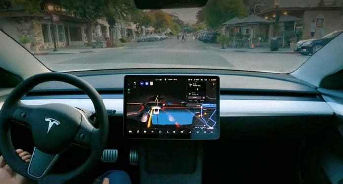
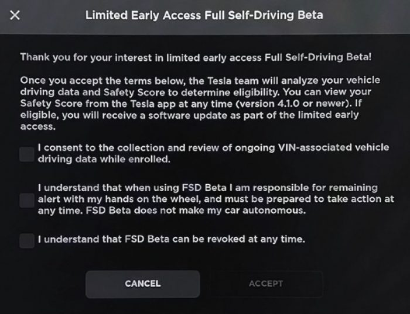
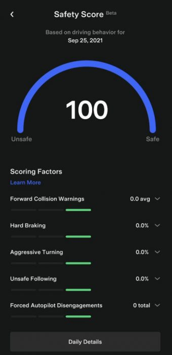
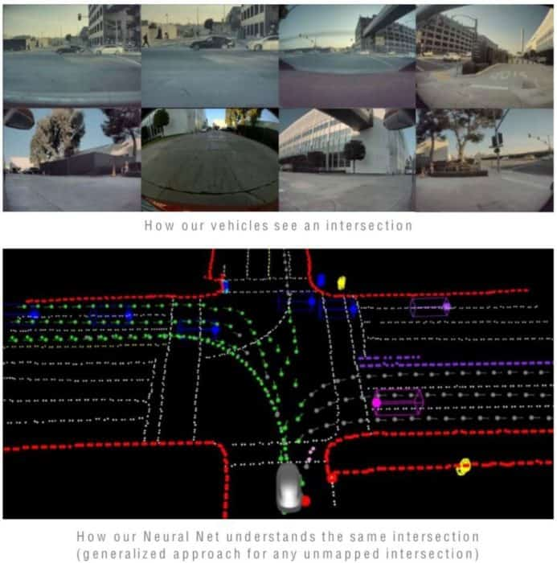

Tesla FSD v14.3 配信開始

2026年4月 ― TeslaはHardware 4搭載車へのFSD v14系リリースを継続的に展開しています。Hardware 3搭載車は現在v12系を使用していますが、Tesla第3四半期決算発表によれば、2026年第2四半期中に「FSD v14 Lite」版がHardware 3ユーザー向けに提供される予定とのことです。
FSD Beta ― より広範な配信へ
FSD 14 ― TeslaのFull Self-Driving（完全自動運転、FSD）は、v12へのジャンプ以来、最も重要な移行フェーズのひとつを迎えています。TeslaがRobotaxiに注力していた時期が長く続きましたが、FSDの最新バージョンであるv14.3は、内部構造の大規模な書き直しと、システム効率を高めるための先進的なAIフレームワークの導入が特徴です。AIコンパイラとランタイムをゼロから再構築したことで、Teslaは反応時間を20%改善したと報告されており、車両がロボットらしさを脱し、熟練したドライバーのような動きに近づいています。このアップデートは特に複雑な「エッジケース」シナリオや駐車操作における精度と信頼性の向上に重点を置いています。
FSD v14.3は現時点ではHW4/AI4専用（フル・非妥協版）です。Hardware 3（HW3）搭載車 ― 2023年初頭までに製造されたTeslaに搭載 ― は、今週（またはそれ以降しばらくの間）v14.3を現行形式では受け取ることができません。
Teslaは（決算発表や公式声明において）明確に述べています: HW3向けに最適化・プルーニングされたFSD v14 Lite（またはv14ブランチ）を積極的に開発中です。目標スケジュールは2026年夏／2026年第2四半期末（大半の情報筋はHW4でのv14シリーズが完結した後の6月末頃を指摘しています）です。
FSD v14.3
FSD v14.3（2026.2.9.6）が新たなリリースです。
 ▶
▶
FSD v14.3 紹介動画（YouTube）
FSD v14.3 テスターの初期評価
FSD 14.3は「運転を学ぶ」フェーズから「細部をマスターする」フェーズへの転換を示しています。一般道ではこれまで以上に自信に満ちた効率的な走行を実現していますが、駐車の最終動作や複雑なローカル地形のナビゲートにはまだ人間の監視が必要です。
FSD 14.3 に対する印象
ポジティブな側面（改善点）
- 人間らしいスムーズさ: ソフトウェアは加速・減速においてより自然なグラデーションを示し、「ロボット的な突発的動作」から脱し、落ち着きのある流れるような運転スタイルに近づいています。
- 的確な駐車: テスターは駐車成功率とスピードの著しい向上を指摘しており、車両は駐車場やガレージで無目的に周回するのではなく、最初の空きスポットを特定して入庫するケースが増えています。
- 視覚認識と標識認識の強化: アップグレードされた視覚エンコーダにより、3Dジオメトリと交通標識の理解が向上しました。内部マップデータが誤って旋回を示唆していた場合でも、「進入禁止」標識を正しく遵守したケースも報告されています。
- 反応的な安全性: 改善された反応時間により、割り込み車両や横断しようとしている歩行者などの突発的危険に対して、人間らしい予防的な対応が可能になっています。
- インテリジェントな高速道路ナビゲーション: Mad Maxモードは現在、1マイル以上前からナビゲーションを計画し、交通に封じ込められることなく出口前に適切な車線に移動するようになっています。
- まれなシナリオへの対応: 緊急車両、スクールバス、優先権違反者への対応が改善され、予測不能な都市環境でのシステムの堅牢性が向上しています。
ネガティブな側面（残存する課題）
- ポットホール回避は未実装: 高い需要にもかかわらず、ポットホール回避は「近日実装予定の改善」としてリストアップされており、現行の14.3ビルドでは機能しません。
- 駐車ロジックのギャップ: より速くなった一方で、駐車システムは細いチェーンのような非標準の障壁に騙されることがあり、特定店舗や障害者用に予約されたスペースを認識できないこともあります。
- ナビゲーションのループ問題: 「ナビゲーター」が回り道な非効率ルートを選択することがあり、理想的な駐車スポットを探しながらブロックを何度も周回する「永久ループ」に陥ることもあります。
- 過度な敏感性: 反応速度の向上が過反応を引き起こすことがあり、道路を吹き抜ける一枚の葉のために制動をかけるケースも見られます。
- 「ゴール直前」での介入: 狭い道での縁石への位置調整や車道の誤選択でつまずき、ドライバーが旅の最終段階で引き継がざるを得ない状況がまだ発生しています。
2025年5月、FSD v13.2.9（AI4/HW4）とv12.6.4（AI3/HW3）― 12.14.6などの最新リリースは引き続きアップデートを提供しており、特にHardware 4車両向けのFSDとバグ修正が含まれています。Teslaは最近Robotaxiに注力していたため、しばらくこのバージョンを使用していました。
2025年3月、AI4/HW4向けFSD v13.2.8 ― Teslaのソフトウェアアップデート2025.2.8は、FSDを2025年ソフトウェアブランチに初めて統合したもので、HW3車両向けのFSD（Supervised）v12.6.4とHW4車両向けのFSD（Supervised）v13.2.8が導入されました。このアップデートにはカメラ視認性検出やサードパーティ急速充電プリコンディショニングなどの機能も追加され、安全性と利便性が向上しています。
2025年2月、AI4/HW4向けFSD v13.2.8（2024.45.32.20）― TeslaはHardware 4（HW4/AI4）車両向けにFSD v13.2.8を、Hardware 3（HW3/AI3）車両向けにFSD 12.6.4を単一アップデートとしてリリースしました。
v13はHardware 4車両では好調なようですが、Hardware 3のv12は苦戦しているようです（「設定」でカメラキャリブレーションをお試しください）。
2025年1月、AI3/HW3向けFSD v12.6.1（2024.45.25.15）― Teslaは旧Hardware 3車両向けにv12.6.1をゆっくりと展開しています。Hardware 3（HW3）車両向けTesla FSD 12.6.1アップデートは、車線変更動作を改善し、高速道路と市街地走行スタックを統合し、カスタマイズ可能な運転スタイルのためのスピードプロファイルオプション（Chill、Standard、Hurry）を導入しています。また緊急車両の音声検知も可能になっています。
2024年12月、AI4/HW4向けFSD v13.2.2.1（2024.45.25.6）― TeslaはFSD v13.2.2.1をAI4（HW4）ユーザーに広く展開しました。ホリデーアップデートも含まれています。FSD V13は現在AI4（Hardware 4）搭載車両専用です。
V13アップデートではいくつかの重要な機能強化が導入されています：
- エンドツーエンド走行ネットワークの完全刷新: 自律走行能力向上のため走行ネットワーク全体をアップグレード。
- 駐車→駐車機能（Parked to Parked）: FSD V13には、駐車状態から駐車状態への動作を可能にする3つの主要機能が含まれています：
- Unpark（発進）: 車両が駐車中の状態からFSDを開始できるようになりました。車は目的地に向けてパークからドライブまたはリバースにシフトできます。
- Reverse（後退）: 車両がパーク・ドライブ・リバース間を自動的に切り替えられます。
- Park（駐車）: FSDが目的地に到着したとき、空いている駐車スペースに自動的に駐車できます。
FSD V13はTeslaの新しい計算クラスター「Cortex」でトレーニングされているため、大幅な改善が期待されます。
2024年11月、FSD Supervised V12.5.4.2（2024.33.5、追加機能を含む他バージョンも含む）が非Cybertruckに展開されました。HW3車両のスムーズさ向上に加え、「Actual Smart Summon」（スマートサモン）のアップデートが含まれており、射程距離が約85メートルに拡大されています。また、ビジョンベースの注意モニタリングがサングラス着用時もサポートするようになりました。
2024年8月、FSD Supervised V12.5.1.5（2024.26.20）がHardware 3（HW3または「AI 3」）搭載車両に展開されています。これはより多くのパラメータを持つ大規模なAIモデルを活用した大幅な改善バージョンです。当初はHardware 4（AI 4）に先行展開され、Hardware 3上でも動作するよう最適化されました。
2023年12月15日 ― FSD Beta V11.4.9（2023.44.30.1、2023.44.30.2、2023.44.30.6、2023.44.30.8）― NHTSAのTeslaリコール修正とホリデーソフトウェアアップデートの両方を含んでいます。
最近のリコール（米国ではキャンペーン#23V-838、カナダでは#2023-657）に従い、TeslaはAutosteerに以下の改善を行っています：
- タッチスクリーン上のドライバー監視警告アラートの視認性を向上（Model 3およびModel Yのみ）― テキストサイズを拡大し、通知をより目立つ位置に移動。
- スタークの1回の操作でオートパイロット機能をアクティベートするオプションを追加（2回から1回へ）、起動と解除を簡素化。
- 高速道路外で信号機や一時停止標識に近づく際のAutosteerのドライバー注意要件を強化。
- Autosteerの使用が不適切と判断された場合、Autosteerの使用を1週間制限する「サスペンションポリシー」を導入。不適切な使用とは、ドライバーまたは同乗者が「強制オートパイロット解除」を5回受けた場合を指します。
あなたはドライバーです。ドライバーとして、道路に注意を払い、ハンドルに手を置き、安全を確保するためにいつでも介入できる準備をしておく必要があります。
オートパイロットのサスペンション
最大限の安全性と責任のため、不適切な使用が検出された場合はオートパイロット機能が停止されます。不適切な使用とは、あなたまたは車両を運転した別のドライバーが「強制オートパイロット解除」を5回受けた場合です。解除とは、ドライバーが不注意に対する複数の音声・視覚警告を受けた後、Autopilotシステムがその走行中ずっと解除されることです。ドライバー主導の解除は不適切な使用とはみなされず、ドライバーに期待される行動です。ハンドルに手を置き、常に注意を払ってください。Autopilot使用中は携帯機器の使用は許可されていません。
オートパイロット機能はこのサスペンション方法によってのみ解除でき、約1週間使用不可となります。
2023年10月、FSD Beta V11.4.7.3（2023.27.7）― Tesla FSD Beta v11.4.7.3アップデートは主にバグ修正に焦点を当てています。このバージョンのリリースノートは前バージョンのv11.4.7.2と同様の内容です。Teslaはこれらの最近のビルドでFSD Betaの問題に対処し続けています。
2023年9月29日、FSD Beta V11.4.7.2（2023.27.6）― 最新のFSD Betaバージョンがリリースされ、主にベータテスターを通常のユーザーが受け取ってきたFSD以外の機能に同期するものです。
2023年8月29日、FSD Beta V11.4.7（2023.7.30）― 最新のFSD Betaバージョンが展開され、Elon Muskによれば「ほぼAIで動作」しており、FSDが隣の車線に移動してしまう「フォロールート」や「車線逸脱」の問題が修正されることが期待されています。
2023年6月20日、FSD Beta V11.4.4（2023.7.20）― TeslaのFSD Betaソフトウェアの最新版v11.4.4がベータテスターに広く展開されました。このリリースは段階的なアップデートで、一部に回帰の問題があるようです。
2023年6月13日、FSD Beta V11.4.3（2023.7.15）― Teslaはv11.4.3を顧客車両に広く展開しました。このリリースはバグ修正を含む段階的なアップデートです。
2023年5月27日、FSD Beta V11.4.2（2023.7.10）― TeslaのFSD Betaソフトウェア最新版v11.4.2が顧客に展開されました。このリリース（ビルド2023.7.10）は前ビルドからの改良が施されています。Elon Musk CEOは最近のツイートで、FSD Beta 11.4.2は週末にリリース予定で、特定の修正可能なバグへの対処に焦点を当てていると明かしました。
2023年4月1日、FSD Beta V11.3.5（2022.45.14）とV11.3.6（2022.45.15）が展開されました。これは待望の「シングルスタック」版FSDで、市街地と高速道路のコードを統合しています。
「これにより、高速道路以外でもビジョンと計画スタックが統合され、4年以上前のレガシー高速道路スタックが置き換えられます。レガシー高速道路スタックはシングルカメラとシングルフレームのネットワークに頼り、シンプルな車線固有の操作を処理するために設計されていました。FSD Betaのマルチカメラ動画ネットワークと次世代プランナーは、車線への依存を減らしたより複雑なエージェントインタラクションを可能にし、よりインテリジェントな動作、滑らかな制御、より優れた意思決定への道を開きます。」
2023年1月23日、FSD 10.69.25.2（2022.44.30.10）はホリデーリリース10.69.25.1（2022.45.25.5および2022.44.30.5）の継続版で、バグ修正を含むソフトウェアアップデートです。
2022年11月20日、FSD Beta 10.69.3.1（2022.36.20）がベータテスターに展開されました。このリリースには更新されたエネルギーアプリ、詳細なエネルギー充電器情報、強化されたTeslaアプリ統合、ブラインドスポットカメラの位置情報、代替ルートなどの改善が含まれています。
2022年10月2日、FSD Beta 10.69.2.3（2022.20.18）が展開されました。10.69.2.2（2022.20.17）からのバグ修正です。
2022年9月11日、FSD Beta 10.69.2（2022.20.15）がテスターに展開され、交差点、マップデータのない道路、ロータリー、非保護左折での大幅な改善が約束されています。リリースノートは以下のとおりです。
また、Full Self-Drivingの価格が9月5日に12,000ドルから15,000ドルに値上がりしました。
2022年5月28日、FSD Beta 10.12.2（2022.12.3.20）が10万台以上の車両とより多くのTesla Safety Scoreユーザーに広く展開されました。このバージョンは非保護左折、渋滞、複雑な交差点の改善を含んでいます。また、10.12.2では最高速度が85MPHに引き上げられました。
2022年4月12日 ― FSD Beta 10.11.2（2022.4.5.21）が米国でより広く展開され始め、いくつかの重要な改善が含まれています。10.11の展開は、10.11、10.11.1、そして4/12時点で一時停止後に再開された10.11.2と、紆余曲折を経てきました。Teslaチームからの注目点として：
- Elon：「ベクター車線はTesla AIに対する特に重要なアーキテクチャ上の改善です」
- Karpathy：「要約すると、GPT類似のTransformerが車線とその接続を予測するようになりました。この『ベクター空間への直接変換』フレームワークにより、予測が共同的に一貫したものになり（逐次条件付けにより）、プランナーが容易に使用できるようになっています（スパース性による）。チームの素晴らしい成果です。」
2022年2月18日 ― FSD Beta 10.10.2（2021.44.30.21）がリリースされ、NHTSAが「衝突リスクを高める可能性がある」として安全リコールに指定したことを受け、ローリングストップ設定が削除されました。リリースノートは以下のとおりです。
また、カナダのFSD「アクセスリクエスト」ボタンが2022.4.5.4として2/26/2022に展開されています。
2022年1月17日 ― FSD Beta 10.9（2021.44.30.10）が展開されました。Elon Muskはv11が2月にリリースされる予定であることも明らかにしました。
2022年1月7日 ― FSD Beta 10.8.1（2021.44.30.5）― 一部の問題を修正する小規模なアップデートですが、FSD Betaが使用不可になるドライバーストライク（例：注意不足後）に対してもより寛容になっています。このリリースでは、各FSDリリース後にストライクがリセットされ、ストライク数が5に増加しています。
2021年12月23日 ― FSD Beta 10.8（2021.44.25.6）― Teslaはより広範なFSD Beta 10.7リリースをスキップし、FSD Beta 10.8（リリースノートは以下）に直行しました。ウェイポイントとホリデーの特典が含まれており（ソフトウェアアップデートのホリデーリリースを参照）、Safety Scoreが97のユーザーに展開されました。
2021年12月5日 ― FSD Beta 10.6（2021.36.8.9および2021.36.8.10）― FSD Beta 10.6が12/5に展開開始され、物体検出の改善などが含まれています。ただし、Elon Muskが「煩わしい」問題を修正するために10.6.1を展開するため一時停止されました。
2021年11月22日 ― FSD Beta 10.5（2021.36.8.8）― FSD Beta 10.5が11月22日にTesla Safety Score 98のユーザーへの展開を開始しました。リリースノートは以下のとおりです。
2021年11月7日 ― FSD Beta 10.4（2021.36.8.5）― FSD Beta 10.4が11月7日に展開開始されました。段階的な改善がありましたが、追加テスターへの展開にはまだ準備ができていませんでした。
2021年10月25日 ― FSD Beta 10.3.1（2021.36.5.3）が、高速道路での誤Automatic Emergency Braking（AEB）を含む多くの重大なバグを抱えた10.3のフィックスとしてリリースされました。アクセスをリクエストしたFSDオーナーで99以上のTesla Safety Scoreを持つユーザーがアクセスを取得しています。リリース詳細は以下のとおりです。
2021年10月11日 ― FSD Beta 10.2（2021.32.25）が、アクセスをリクエストしかつSafety Scoreが100/100のFSDオーナー約1,000名にリリースされました。
FSD Beta リリースノート
FSD Beta 10.69.3 の更新内容：
- 低視界シナリオに特に重点を置いた最新の自動ラベル付きデータセットですべてのパラメータを再トレーニングし、物体検出ネットワークをフォトンカウント動画ストリームにアップグレード。
- 精度と遅延の改善、遠方車両の検出率向上（高リコール）、横断車両の速度誤差20%低減、VRU（脆弱な道路利用者）精度20%向上のためのアーキテクチャ改善。
- VRU速度ネットワークを2段階ネットワークに変換し、遅延を削減、横断歩行者の速度誤差を6%改善。
- 非VRU属性ネットワークを2段階ネットワークに変換し、遅延削減、横断車両の誤車線割り当てを45%削減、誤駐車予測を15%削減。
- 自己回帰的ベクター車線の文法を改良し、車線の精度を9.2%、リコールを18.7%、フォーク検出リコールを51.1%向上。データ量を3.8倍にしてすべてのコンポーネントを再トレーニングするフルネットワーク更新を含む。
- ベクター車線ニューラルネットワークに新しい「道路マーキング」モジュールを追加し、交差点での車線トポロジーエラーを38.9%改善。
- 検出安定性向上と丘の頂上付近での検出改善のため、占有ネットワークをエゴではなく道路面に整合するようアップグレード。
- 候補軌跡生成のランタイムを約80%削減し、高コストな軌跡最適化手順を軽量なプランナーニューラルネットワークに蒸留してスムーズさを向上。
- ゴア地点周辺での短期デッドライン車線変更の意思決定を改善し、ルート外走行とゴア通過に必要な軌跡のトレードオフをよりリッチにモデル化。
- 歩行者の運動学のより優れたモデルを使用し、横断歩道付近の歩行者に対する誤減速を削減。
- 一般占有ネットワークで検出されたより精確な物体ジオメトリの制御を追加。
- 車両の旋回/横方向操作のより優れたモデル化により、目的パスから離脱する車両に対する不自然な減速を回避して制御を改善。
- 実行可能な車両運動プロファイルを探索し、静的障害物を回避しながらの縦方向制御を改善。
- 相対加速度を軌跡最適化で考慮することで、高相対速度シナリオでの車線内車両に対する縦方向制御スムーズさを向上。
- 適応型プランナースケジューリング、軌跡選択の再構造化、知覚計算の並列化により、最良ケースの物体フォトン→制御システム遅延を26%削減。より迅速な意思決定を可能にし、反応時間を改善。
FSD Beta 10.69 の更新内容：
- 動画ストリームから抽出したフィーチャーとコースマップデータ（車線数・接続性など）を融合する新しい「ディープレーンガイダンス」モジュールをベクター車線ニューラルネットワークに追加。このアーキテクチャにより、前モデルと比較して車線トポロジーのエラー率が44%低減し、複雑な交差点での操作を可能に。
- 軌跡計画でのシステムと作動遅延のより優れたモデル化により、遅延を犠牲にせず全体的な走行スムーズさを向上。
- 高速対向交通の存在下での中央分離帯横断地点へのアプローチ・退出時の速度プロファイルを改善し、非保護左折をより自然に（「Chuck Cook式」非保護左折）。
- 占有ネットワークからの任意の低速移動ボリュームに対するコントロールを追加。また、直方体プリミティブで表現しにくい精密な物体形状のよりきめ細かな制御を可能に。
- 占有ネットワークを単一タイムステップの画像ではなく動画を使用するようアップグレード。この時間的コンテキストにより一時的な遮蔽への堅牢性が向上し、占有フローの予測が可能に。
- 物体の運動学（速度、加速度、ヨーレート）を生成する新しい2段階アーキテクチャにアップグレード。遠方横断車両の速度推定精度が20%向上、計算量は10分の1に。
- 信号機とスリップレーン、譲るべき標識とスリップレーンの関連付けを改善し、保護された右折のスムーズさを向上。
- 横断歩道付近での誤減速を削減。歩行者と自転車の意図の動きに基づいた理解が改善。
- 自車関連車線の幾何精度を34%、横断車線を21%改善するフルベクター車線ニューラルネットワーク更新。
- 潜在的な遮蔽物体を保護しながら停止する際のよりスムーズなストップのため、視認性確認のクリーピング時の速度プロファイルをより快適に。
- 自動ラベル付きトレーニングセットを2倍にして動物の検出リコールを34%改善。
- 交通制御の有無にかかわらず、物体がエゴの経路を横断する可能性のあるあらゆる交差点で視認性確認のクリーピングを有効化。
- 横断物体のある重要なシナリオでの停止位置精度を向上。
- 自己回帰デコーダのアテンション操作にトポロジカルトークンを参加させ、フォーク部分のトレーニング損失を増加させることで、分岐車線の検出リコールを36%向上。
- エゴが旋回時の歩行者と自転車の速度誤差を17%改善（特にエゴが旋回する場合）。
- 遠方横断車両の26%の未検出を排除し、物体検出のリコールを改善。
- 高ヨーレートシナリオでの物体将来経路予測を改善。
- マップ速度変化を適切に処理することで高速道路合流時の速度を向上させ、高速道路への合流信頼性を高める。
- 先行車のジャークを考慮することで停車から発進する際の遅延を削減。
- 現在の運動学状態を予想制動プロファイルと照合することで信号無視の赤信号を素早く識別。
FSD Beta 10.12.2 の更新内容：
- エゴの行動に対する物体の反応のより優れたモデル化により、非保護左折の意思決定フレームワークをアップグレード。安全マージン内の決定に対してよりスティッキーになりながら、ノイズの多い測定に対する堅牢性を向上させるためのゴー/ノーゴー決定に影響するフィーチャーを追加。
- より正確な車線幾何学と高解像度の遮蔽検出を使用し、視認性確認のクリーピングを改善。
- 物体将来予測とのより優れた統合により、不快な旋回試みのインスタンスを削減。
- 限られたスペースからスムーズに操縦するため、プランナーが車線への依存を減らすようアップグレード。
- 車線ニューラルネットワークのアーキテクチャを改善し、横断車線のリコールと幾何精度を大幅に向上させることで、横断交通との旋回安全性を向上。
- トレーニングセットに18万動画クリップを追加し、すべての車線予測のリコールと幾何精度を向上。
- 車線構造とのより優れた統合と黄色信号に対する動作改善により、交通制御関連の誤減速を削減。
- 一般静的障害物ネットワークとの混合/結合レイヤーを追加することで、道路端と車線ラインの幾何精度を改善。
- 自動ラベラーの改良データと3万動画クリップの追加により、一般静的障害物ネットワークを再トレーニングして幾何精度と視認性の理解を改善。
- 新しいシムと自動ラベル付きデータをトレーニングセットに追加し、オートバイの検出改善、近接歩行者・自転車の速度誤差削減、歩行者の方向誤差を削減。
- 4.1万クリップをトレーニングセットに追加し、車両の「駐車中」属性の精度を改善。テレメトリーで収集した10.11の失敗ケースの48%を解決。
- 自動ラベラーで使用されるニューラルネットワークの改良版でデータセットを再生成し、遠方横断物体の検出リコールを向上。
- ドアが開いた車を避ける際のオフセット動作を改善。
FSD Beta 10.11.2 の更新内容：
- 密ラスター（「点の集まり」）から、Transformerニューラルネットワークを使用して「ベクター空間」の車線を点ごとに直接予測・接続する自己回帰デコーダへと、車線幾何のモデリングをアップグレード。これにより横断車線の予測が可能になり、計算量が少なくエラーの少ない地図との統合が可能に。
- 経路を横断しない車両のより正確な旋回・合流予測を使用し、不要な減速を削減。
- マップが不正確または車がナビゲーションに従えない場合の優先権理解を向上。特に、交差点範囲のモデリングがネットワーク予測に完全に基づき、マップベースのヒューリスティックを使用しなくなった。
- VRU検出の精度を44.9%向上させ、誤検知の歩行者・自転車（特にタールの継ぎ目、スキッドマーク、雨粒の周囲）を大幅に削減。
- 近接オートバイ、スクーター、車椅子、歩行者の予測速度誤差を63.6%削減。敵対的高速VRUインタラクションの新しいシミュレーションデータセットを導入。
- クリーピング開始時の高ジャークでクリーピングプロファイルを改善。
- 一般静的障害物ネットワークで静的幾何学への連続距離を予測することで、近接障害物の制御を改善。
- データセットサイズを14%増加することで車両「駐車中」属性エラー率を17%削減。
- 難しいシナリオでのパフォーマンス向上を目的とした損失関数のチューニングにより、視界良好シナリオの速度誤差を5%、高速道路シナリオを10%改善。
- 開いたカードアの検出と制御を改善。
- 最適化ベースのアプローチにより、横方向・縦方向加速度とジャーク制限および車両キネマティクスを考慮してコントロールに無関係な道路ラインを決定し、旋回時のスムーズさを向上。
- イーサネットデータ転送パイプラインを15%最適化してFSD UI可視化の安定性を改善。
FSD Beta 10.10 の更新内容：
- 高精度軌跡プリミティブを使用して、フォーク操作と旋回車線選択をよりスムーズに。
- すべてのFSDプロファイルでローリングストップ機能を無効化。この動作は以前、特定条件（車速5.6mph未満、関連物体なし、十分な視認性など）が揃った場合に全方向停止交差点でのローリング通過を許可していた。
- 改良された地面真値軌跡で一般静的オブジェクトネットワークを4%改善。
- 停止の緊急度をより適切に表現するソフトとハードの制約をモデル化することで、交差点での横断物体への停止スムーズさを向上。
- 安全な場合に、静的障害物を回避するために対向車線への車線変更を有効化。
- 前のサイクルの速度制御決定との整合性を高めることで、合流処理のスムーズさを向上。
- 横断車両が停止しない可能性のあるイベントにより注意を払うことで、点滅する赤信号交通制御の処理を改善。
- 交差点範囲のより優れたモデリングで交差点での優先権理解を改善。
FSD Beta 10.9 の更新内容：
- 密ラスター（「点の集まり」）からスパースインスタンスへと交差点エリアのモデリングを更新することで、交差点の範囲と優先権割り当てを改善。交差点領域IOU（Intersection over Union）を4.2%向上。スパース交差点ネットワークは自己回帰アーキテクチャで展開された最初のモデル。
- AIコンパイラースタックに10ビット推論サポートを追加し、一般静的オブジェクトネットワークを8ビットISPトーンマップ画像ではなく10ビットフォトンカウントストリームを使用するようアップグレード。全体的なリコールを3.9%、精度を1.7%改善。
- 交差点に直進しながら一時停止してから旋回を開始することで、対向車線を横切る非保護左折をより自然に。
- ネットワーク更新とナビゲーションヒントの新しいフォーマットで、車線の優先度とトポロジー推定を1.2%改善。
- 車線変更後の操作に必要な減速のより優れたモデリングで、短期デッドライン車線変更を改善。
- 車線幾何に制限されない物体の将来経路をキネマティクスのより優れたモデリングで改善。
- 近くに差し迫った減速がある場合に停止からの発進をより穏やかに。
- 狭い道での対向車の流れに対して譲歩する際のギャップ選択を改善。
FSD Beta 10.8 および 10.8.1 の更新内容：
- 物体属性ネットワークを改善し、誤割り込み減速を50%削減、車線割り当てエラーを19%削減。
- フォトン→制御車両応答遅延を平均20%改善。
- オートパイロットで回生制動を0mph まで拡張し、よりスムーズな停車と電力効率の向上。
- VRU（歩行者、自転車、オートバイ、動物）の横方向速度誤差を4.9%改善。
- 視認性端での物体の速度推定改善により、横断物体の誤減速を削減。
- 物体の車線割り当てを相互検証する幾何学的チェックを追加し、誤減速を削減。
- 視認性が低い場合の非保護左折の速度プロファイルを改善。
- 右折時に自転車レーンの上を通るより自然な動作を追加。
- ソフトとハード期限のより優れたモデリングで停止領域を改善し、信号無視横断歩行者への対応時の快適性を向上。
- 合流点と視認性端のゴースト物体のより優れたモデリングで合流制御のスムーズさを向上。
- 軌跡オプティマイザーでのより厳格な横方向ジャーク境界の適用により全体的な快適性を向上。
- よりリッチな軌跡モデリングで短期デッドライン車線変更を改善。
- 先行車追い越しと車線変更ギャップ選択の統合を改善。
- 軌跡ライン可視化を更新。
FSD Beta 10.6 の更新内容：
- 非VRU（車、トラック、バスなど）の物体検出ネットワークアーキテクチャを改善。横断車両の検出率7%向上、深度誤差16%低減、速度誤差21%低減。
- 平均相対誤差18.5%削減の新しい視認性ネットワーク。
- 高曲率・夜間ケースで精度17%向上の新しい一般静的オブジェクトネットワーク。
- 対向物体への停止位置精度を向上させ、非保護左折での一時停止中の停止位置を改善。
- 合流領域の終端モデリングを組み込み、合流時の縦方向アライメントのための余地を拡大。
- 車線から離脱する物体へのオフセット時の快適性を改善。
FSD Beta 10.5 の更新内容：
- 自動ラベリングの品質向上により、VRU（歩行者、自転車、オートバイ）の横断速度誤差を20%改善。
- 新しい静的世界自動ラベラーと16.5万件の自動ラベル動画追加により、静的世界予測（道路ライン、縁、車線接続）を最大13%改善。
- 1.5万動画クリップ追加とオーバーサンプリング・オーバーウェイティング戦略の調整により、コーンと標識の検出を改善（+4.5%精度、+10.4%リコール）。
- 誤減速削減のため割り込み検出ネットワークを5.5%改善。
- 「緊急衝突回避操作」をシャドーモードで有効化。
- 安全な場合に合流からの車線変更動作を有効化。
- 交差点でのマルチモーダル物体予測を使用し、合流物体の検出リコールを改善。
- スムーズな到着時間制約と視認性外の合流物体を考慮することで、合流の制御を改善。
- 短期デッドライン状況での最大減速制限を拡大し、車線変更を改善。
- 視認性向上のための前進クリーピング横方向制御を改善。
- 高曲率道路での道路境界のモデリングを改善し、よりきめ細かな操作を実現。
- ルート上に留まり不要な迂回・ルート変更を回避するロジックを改善。
FSD Beta 10.4 の更新内容：
- 安全な場合にナビゲーションルートから外れた際の回復処理を改善。
- 高速道路横断時の高速物体の処理と検出を改善。高速道路横断時の加速を高速化。
- 高い障害物に囲まれた狭いスペースでの速度を向上。
- ハイパーパラメーターチューニングとオーバーサンプリング戦略の改善で一般静的オブジェクトネットワークをアップグレード（+1.5%精度、+7.0%リコール）。
- 次世代自動ラベラーのデータを追加することでVRU検出（歩行者、自転車、オートバイ）を改善（精度+35%、リコール+20%）。
- 新しいデータと改良されたトレーニング手法で緊急車両検出ネットワークを改善（合格率+5.8%）。
- オブジェクト検出ネットワークの入力にナビゲーションルートを追加することでVRU制御関連属性を改善（精度+1.1%）。
FSD Beta 10.3 の更新内容：
- ドライバーがローリングストップ、追い越し車線の退出、速度ベースの車線変更、車間距離、黄信号の車頭時間などの動作を制御できるFSDプロファイルを追加。
- 路上障害物を迂回するために対向車線に沿って走行する計画能力を追加。
- 視認性ネットワーク推定と横断車線の交差点への距離にスピードを連動させてクリーピング速度を改善。
- より多くのデータでサラウンドビデオ車両ネットワークをアップグレードすることで、横断物体速度推定を20%、ヨー推定を25%改善。また、システムフレームレートを+1.7フレーム/秒向上。
- トレーニングデータセットに+2.5万動画クリップを追加し、車両セマンティック検出（ブレーキライト、ウインカー、ハザードなど）を改善。
- 6千動画クリップ追加で一般静的障害物ネットワークをアップグレードして静的障害物制御を改善（+5.6%精度、+2.5%リコール）。
- オンランプから主要道路への合流時および低速から高速車線への車線変更時に、より多くの加速を許可。
- 歩行者と静的世界の相互作用モデルを改善し、歩行者の誤減速を削減してオフセットを改善。
- 安全な場合に車線ラインに沿ってより自然に走行することを許可し、非保護旋回の旋回プロファイルを改善。
- 横断物体を追い越すために必要な縦方向・横方向加速度制限をより厳格に適用し、高速道路への合流時の速度プロファイルを改善。
FSD Beta リクエストボタン
9月24日にTeslaは2021.32.22ソフトウェアアップデートをリリースしました。これにはFull Self-Drivingパッケージを購入済みでHardware 3対応車両を持つユーザー向けに、新しいボタンが含まれています。これらの顧客は「コントロール」>「オートパイロット」に新しい「Full Self-Driving Betaをリクエスト」ボタンが表示されるようになりました。
FSD Betaプログラムへの参加を希望する場合、Teslaが運転状況を監視してセーフティースコアを計算することに同意する必要があります。

Teslaは少なくとも7日間、あなたの運転行動を監視します。
安全運転のすすめ
プログラムに参加すると、TeslaアプリにScore表示が表示され、改善するための確認ができます（現在はiPhoneのみ）：

参加する場合は、TeslaウェブサイトのTesla Safety Score Betaの情報を必ず読んで、Teslaが何をどのように追跡しているかを正確に理解してください。
いくつかのヒント：
- 十分な車間距離を保つ（特に時速50マイル以上では）
- 穏やかにブレーキをかける。できれば回生ブレーキのみを使用。
- 前方衝突警告を避けるため、道路前方のあらゆる状況に注意を払う。
- 急なハンドル操作を避ける。
Teslaによれば、オートパイロットでの走行はセーフティースコアの計算に含まれませんが、走行距離は合計に含まれます。つまり、高速道路ではオートパイロットを使用したいかもしれません。特に前の車との適切な車間距離を保つのが難しい場合はなおさらです。
少なくとも7日間の安全運転の後、FSD Betaプログラムへの参加資格が得られます。7日間後すぐに参加できるのか、それとも段階的に追加されるのかはまだ不明です（後者でしょう）。
Tesla ドライバーが最も問題を抱える箇所
アプリのTesla Safety Scoreデータによると、ほとんどの人が以下の分野で問題を抱えています：
- 危険な車間距離 ― 15%
- 急なハンドル操作 ― 3%
- 急ブレーキ ― 2%
- 前方衝突警告 ― 1,000マイルあたり10件
時速50マイル以上での走行時には、前の車との間に十分なスペースを確保してください。Teslaによれば：
危険な車間距離とは、車速が車頭時間3.0秒未満である時間のうち、車頭時間が1.0秒未満である時間の割合です。
FSD Beta からの退出
FSD Betaに参加した後も、運転中は引き続き細心の注意を払う必要があります。そうしなければ、プログラムから除外されるかもしれません。FSD Betaプログラムの参加者の中には、不注意運転でTeslaからメールを受け取った人もいます：
「こんにちは、FSD Beta機能の使用中に、あなたまたはあなたの車両を運転した別のドライバーが受けた行為について具体的に：」
- 2回以上の「ストライクアウト」でその走行でのオートパイロット利用が喪失した場合、または
- オートパイロット走行5km（約3マイル）あたり少なくとも1回の「ストライク」（注意を要求する視覚・音声警告）
「これが最後の警告です。オートパイロット使用時は常にハンドルに手を置き、注意を払ってください。この車は自律型ではなく、注意を払わなければ事故が起こり、あなたや他の人が怪我をしたり、最悪の場合死亡する可能性があります。この警告に従わない場合、FSD Beta機能が車両から削除されます。Teslaチーム」
ハンドル（またはヨーク！）に手を置き、常に注意を払ってください。
ベータテスター動画
その間、毎日YouTubeにアップロードされているたくさんの動画や、以下でハイライトされているものをチェックしてみてください。
現状を「トレーニング動画」の形でわかりやすく概観した動画です：
 ▶
▶
FSD Beta 概要動画（YouTube）
FSD Beta 概要
TeslaのFull Self-Drivingオプションは長い間、市街地を含むあらゆる道路でオートパイロットによる自動ナビゲーション、さらにはレベル5（「レベルとは何を意味するか」参照）の完全自律システムになるという約束を掲げてきました。市街地のオートパイロット機能を期待してFull Self-Drivingパッケージに数千ドルを費やしたお客様もこの機能を心待ちにしています。
とはいえ、自律走行の実現は長い道のりでした。あらゆる条件下でのあらゆる道路のナビゲーションは、AIシステムにとって最も複雑なタスクのひとつです。Elon Muskは当初2017年にロサンゼルスからニューヨークへの完全自律走行を目標にしていましたが、後にその目標を完全に撤回しました。その後、Full Self-Drivingは2019年末までに「フィーチャーコンプリート」になる予定でしたが、スケジュールはさらに後ずれしました。
最終的に、TeslaがAIベースのオートパイロットシステムの大規模な刷新、いわば「書き直し」を行っていることが明らかになりました。2020年後半、この書き直しは「Full Self-Driving Beta」（FSD Beta）として、2021年または2022年初頭にはより広い範囲でのリリースを見込んで、少数の選ばれたテスターへの展開が始まりました。Full Self-Drivingパッケージは市街地での自動旋回機能を持つようになりますが、その名前にもかかわらず完全自律（レベル5）ではなく、当面は注意を払うドライバーが引き続き必要です。
Full Self-Drivingの書き直しが4D環境を生み出す
新しいFull Self-Drivingの書き直しの核心は、ニューラルネットワークコンピューターが車両周囲の8台すべてのカメラを活用し、より高い状況認識のために仮想3D（時間を含めた4D）環境を作成できる機能です。

市街地でのFull Self-Driving
この3Dモデル（時間を含む4D）の構築は、フリーウェイ走行よりもはるかに複雑な市街地のナビゲーションにとって特に重要です。Teslaのベータリリースノートで言及されているように、車両が複雑な操作を行えるようになります：
「Full Self-Drivingが有効になると、車両はナビゲーションルートに沿って車線変更、分岐での選択、他の車両や物体の回避、左右折を行います。」
ただし、これはソフトウェアの書き直しであり、新機能だけでなくシステム全体のテストが必要なため、初期ベータテスターは特別な注意を払うよう警告されています：
「Full Self-Drivingは早期の限定アクセスベータ版であり、追加の注意を払って使用する必要があります。最悪のタイミングで誤った操作をする可能性があるため、常にハンドルに手を置き、道路への注意を怠らないでください。油断は禁物です。」
Full Self-Driving Betaの初期の様子
ベータテスターはリリースごとに大量の動画をYouTubeにアップロードしており、進化の様子を仮想的に体験できます：
 ▶
▶
FSD Beta 初期テスト動画 1（YouTube）
 ▶
▶
FSD Beta 初期テスト動画 2（YouTube）
ご覧のとおり、これはまだ非常に早期のリリーステストソフトウェアであり、公開リリースにはまだ程遠い可能性がありますが、印象的な機能を持っています。
急速でも慎重なアップデート
TeslaチームはElon Muskによれば5〜10日ごとにベータテスターへのアップデートをリリースするなど、急速な進歩を遂げているようで、改善はすぐに訪れるでしょう。
ただし、問題のあったFSD Beta 10.4リリース（高速道路での誤Automatic Emergency Brakingを引き起こし、Teslaがロールバックせざるを得ないほど危険だった）の後、Teslaは今後のリリースとテストに対してより慎重になっています。
Full Self-Driving書き直しのリリース
Full Self-Drivingのアップデートはまだ少し先のように見えますが、本物の進歩が見られることは素晴らしいことです。とはいえ、名称にもかかわらず「Full Self-Driving」はまだ注意深いドライバーが必要であり、「レベル5」の完全自律走行システムではないことを常に念頭に置くことが重要です。しかし、Teslaがこの分野でエンベロープを押し広げ、エキサイティングな新しいオートパイロットアップデートを提供し続け、最終的にFull Self-Drivingパッケージを購入した人々に重要な新しい運転支援機能をもたらしていることは素晴らしいことです。今後の展開が楽しみです！